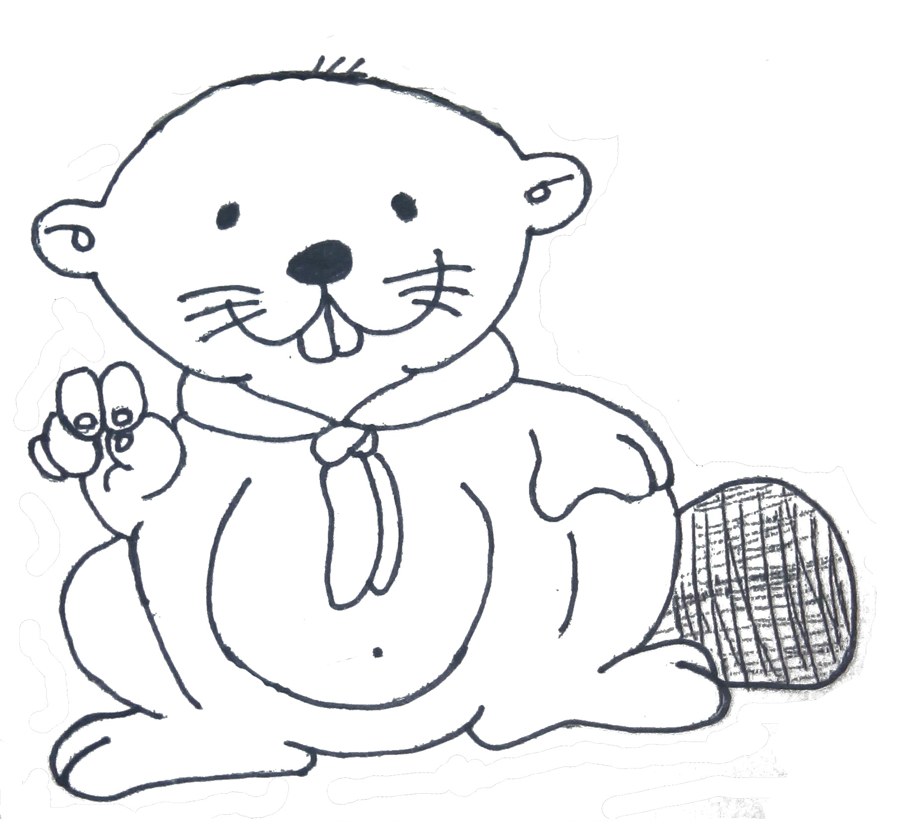
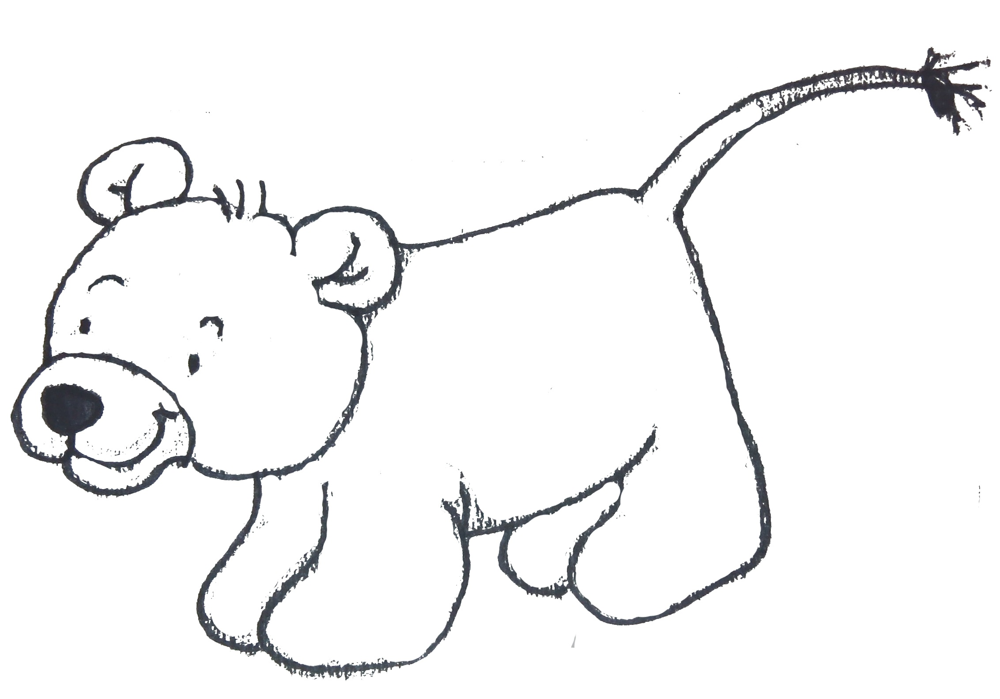

Metodología de los Jóvenes Castores
Los animales del bosque

Keeo, el sabio castor es el líder de la colonia de castores.

Ras, el gato enseña a los castores a ser limpios y aseados.

Salky, el habilidoso pajarito siempre juega junto con el resto de amigos del bosque.

Baru, la pequeña hormiguita siempre es trabajadora y recoge despues de jugar.

Rebru, el oso enseña a la colonia de castores los misterios y la importancia de la naturaleza.
Ley de la Colonia
Un castor es alegre y juega con todos
Lema
Compartir
Oración del Joven Castor
Señor al empezar esta jornada nos invitas a participar, haz que nuestra tarea sea útil para todos para que sepamos construir un mundo que te guste.
Imagen sección